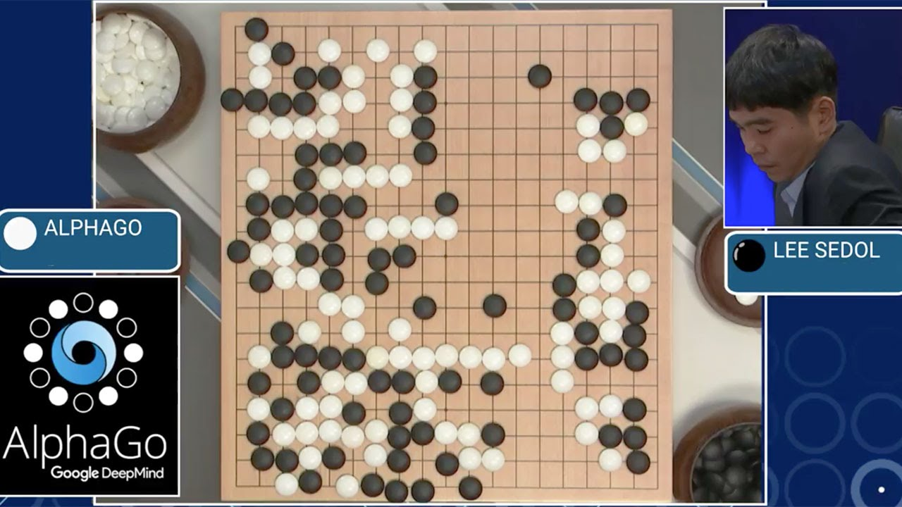

Recent feats of Artificial Intelligence

Beating the World Champion of GO
In 2016, Google DeepMind’s AI software AlphaGo was the first computer program to defeat a professional human Go player and is arguably the strongest Go player in history.

Dominating Atari games
Old Atari games used to be extremely fun for humans, but we never really managed to dominate them like the way AI has recently done. DeepMind – a London-based AI company acquired by Google in 2014 – was recently presented with a few classic Atari games. At first, Google’s DeepMind was not great but lately it started to play better than any human ever did.